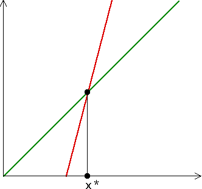

| A fixed point of f is a point x* left
unchanged by f: |
| Graphical iteration reveals a geometric characterization of fixed points. The fixed points of f are exactly the points where the graph of f intersects the diagonal line. |
|  |
| Any interesction point of the graph and the diagonal does not move under "vertically to the graph, horizontally to the diagonal." |
Return to dynamics and number theory.